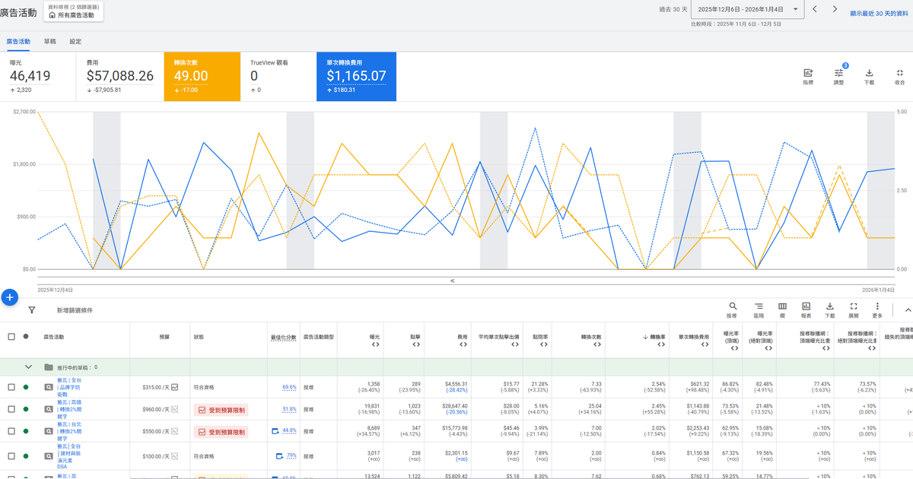
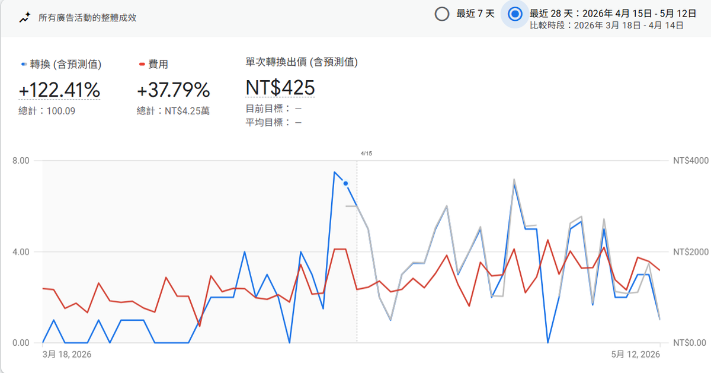
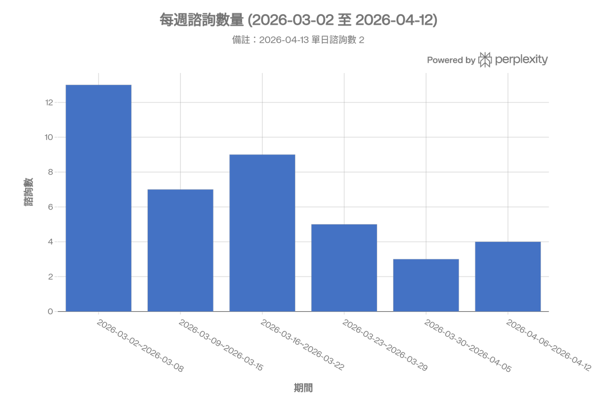

作品畫廊
成效案例
從流量成長到廣告優化，以下 8 則案例濃縮我在內容行銷與數據驅動上的實戰成果。

01 · 流量成長
5,447月活躍使用者
自然搜尋 2,495 · 接手基準線（2022.06）
接手藝瓦官網時流量處於低谷。以 SEO 內容盤點為起點，重新擬定關鍵字策略與部落格排程。
SEO 架構重整
內容策略
關鍵字研究

02 · 流量成長
10,352月活躍使用者
自然搜尋 7,532 · +90% vs 2022 基線
持續投入 SEO 內容與社群導流，自然搜尋佔比從 46% 提升至 73%。內容品質提升帶動頁面收錄速度，長尾關鍵字開始發酵。
自然搜尋佔比 73%
長尾關鍵字發酵

03 · 流量成長
18,954月活躍使用者
自然搜尋 11,032 · +248% 較接手時 · 排名 Top 7 關鍵詞
SEO 內容 + 廣告雙管齊下，關鍵詞平均排名推進至前 7 名，流量年增率維持 80%+。自然與付費渠道形成正向循環。
年增率 80%+
關鍵詞 Top 7
自然＋付費雙驅動

04 · 社群經營
2,650YouTube 訂閱
62 部長片 · 室內設計知識型內容
從零經營「藝瓦・EHO設計」頻道，以居家設計知識內容建立信任，搭配 SEO 優化影片標題與描述，帶動自然搜尋曝光。
知識型內容
SEO 標題優化

05 · 社群經營
1.2 萬Facebook 追蹤者
藝瓦室內設計 · 品牌社群觸及
透過設計案例分享、裝修知識貼文與限時動態，維持穩定互動率，累積品牌忠實追蹤群。
案例分享
品牌互動

06 · 廣告投放
-40%CPA 降幅
46,419 次觀看 · 單次轉換費用優化
透過關鍵字比對與排除設定，逐步降低無效點擊，將廣告預算集中在高轉換意圖的搜尋詞上。
關鍵字比對
負關鍵字策略
轉換追蹤

07 · 廣告投放
+122%轉換成長
費用僅 +38% · 導入多重轉換目標
導入多重轉換目標（來電、表單、LINE 諮詢），以數據驅動分配預算，轉換效率大幅躍升，同時控制成本增幅。
多重轉換目標
預算分配優化
效率 +84%

08 · 廣告投放
穩定成長
每週諮詢進線量 · 淡旺季動態預算
廣告不只帶來流量，更帶進真實諮詢。根據裝修淡旺季靈活調配預算，維持每週穩定進線量。
淡旺季策略
預算調配
ROI 追蹤